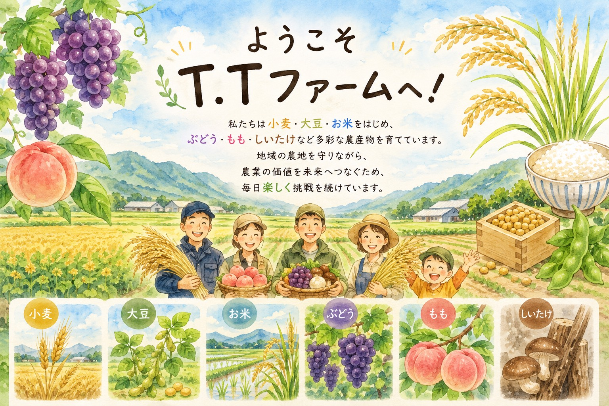

信州から農業の価値を未来へ

T.Tファームは、長野県・信州の自然の中で、 ぶどう、原木しいたけ、米、もも、山菜、小菊、ひまわり、小麦、大豆など、 季節ごとのさまざまな作物を育てる農園です。
若手農家ならではの視点で、作物が育つまでの農作業や農園の日常、 カエルやサワガニなど農園で出会った生き物の姿を発信しています。 子どもから大人まで、農業や自然を楽しく知ることのできる農園を目指しています。
クイーンルージュ®、シャインマスカット、ナガノパープル、 クイーンニーナ、ふじのかがやきなどを育てています。
自然の力を生かした原木栽培。 収穫や天日干し、乾燥しいたけづくりの様子も紹介します。
コシヒカリやつきあかりを栽培。 田植えから稲刈りまで、米づくりの様子を紹介します。
コシアブラ、タラノメ、こごみ、ウド、ふきなど、 信州の春の山菜を紹介しています。
信州の自然の中で育てる小菊。 植え付けから開花、収穫までの様子を紹介しています。
種まきから成長、収穫まで、 季節とともに変わる小麦畑の様子をお届けします。
若手農家が作物や自然と向き合う思い、 T.Tファームの農業について紹介します。
作物の成長、農園の風景、 カエルやサワガニなどの生き物を写真でご覧いただけます。
ぶどうや原木しいたけ、米、小麦などの栽培記録と、 土まみれの農作業の日常をお届けします。
T.Tファームの季節の農産物を、 オンラインショップからご覧いただけます。
農作業の裏側や、農園で出会った生き物たちの姿を YouTube「土まみれ農家の日常」で発信していきます